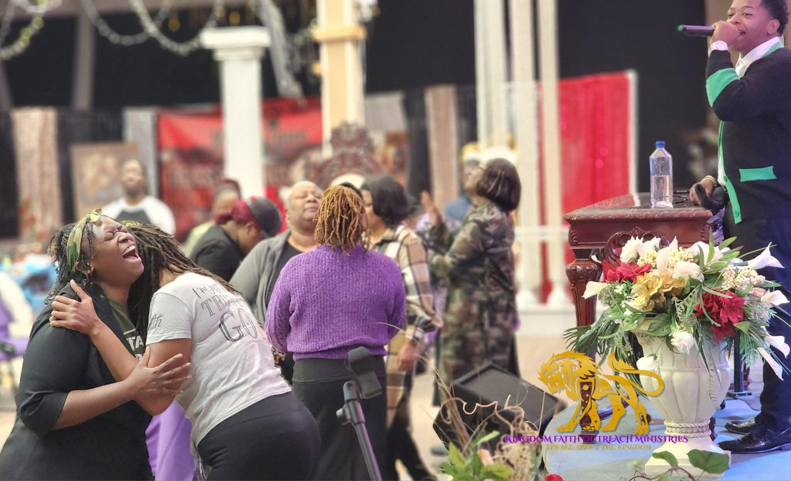
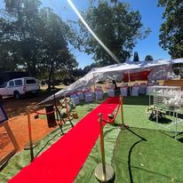
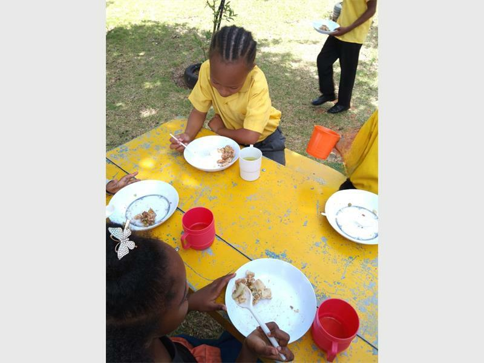

WELCOME TO HOPE
Hope is a unique platform designed to connect you with multiple charitable organizations during times of need. Whether you're seeking assistance, guidance, or community support, Hope makes it easy to find and access the resources you require to overcome challenges and build a brighter future.
Our Organizations
.jpg)
Fred and Martie Soup Kitchen
Fred & Martie’s Soup Kitchen, a registered Public Benefit and Non-Profit Organisation, serves the underprivileged in Claremont, west of Johannesburg, South Africa. Our story began over four decades ago when our parents, Fred and Martie Hughes, recognized the community's needs and took action. Fred, having personally faced poverty, understood the hardships many encountered. In March 1981, when they relocated to Claremont, Johannesburg, they brought along not just their possessions but also a deep sense of empathy and a commitment to making a positive impact.
Kingdom Faith Outreach Ministries
At Kingdom Faith Outreach Ministries, we are dedicated to spreading hope, love, and support to individuals and families in need. As a compassionate and faith-based organization, our mission is to transform lives through spiritual guidance, practical assistance, and community outreach.
TTT Lewis Bereavement Services
At TTT Lewis Bereavement Services, we provide compassionate and comprehensive support to individuals and families during their time of loss. As a registered non-profit organization, our mission is to offer a comforting presence and practical assistance to help navigate the challenging journey of grief.
Hotel Hope Ministries
Hotel Hope Ministries is a registered non-profit organization in South Africa, dedicated to ensuring that every child is raised in a safe, happy, and healthy environment, allowing them to grow into responsible and positive adults. While children are our primary focus, we adopt a holistic approach to addressing the issue of orphaned and abandoned children. We understand the importance of tackling the root causes of the problem, not just the symptoms. Therefore, we have initiatives aimed at supporting mothers and fathers, helping them care for themselves and their children.
About Us
Hope is a unique platform dedicated to connecting individuals and families with a network of charitable organizations, providing vital support in times of need. Our mission is to offer seamless access to essential resources, fostering resilience and empowerment within communities. Founded on the principles of compassion and unity, Hope strives to create a world where everyone can find the assistance they require to overcome challenges and build a brighter future. We believe in the power of collective effort and the importance of offering help and hope to those who are struggling. Let's make a positive impact together, one act of kindness at a time.
Contact Us
Email: nobuhlechandremeyi2007@gmail.com
Phone: +27 76 515 8064